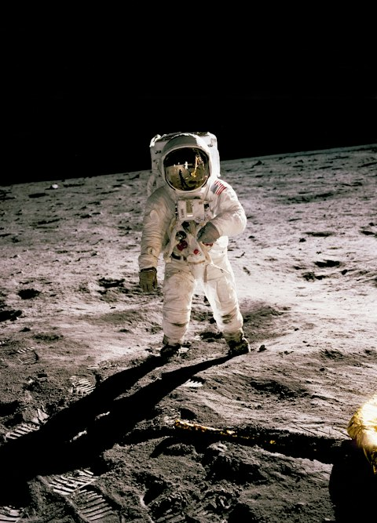

Scroll-triggered Animations & Transitions
Details
- Examples of CSS animations and transitions controlled by IntersectionObserver and Animation Timeline.
- The animation-timeline Scroll Fill demo requires no JS, and shows how the effect is controlled by scrolling.
- prefers-reduced-motion is honored and will render the static elements.
- CSS is structured to show how multiple animations can be combined.
Considerations
- animation-timeline is only supported in Chrome, Edge, and Opera, while it's available behind a flag in Firefox.
- For progressive enhancement, animation-timeline Scroll Fill demo could fall back to the Transition Fill demo by sharing CSS and using `if (!CSS.supports('animation-timeline: --works')) {...}` to initialize the IntersectionObserver
- For the Transition Wipe Left demo, CSS Transition is used instead of CSS Animation, due to the latter having challenges with reversing an animation via toggled classes.
Demo
There are ten demos below. One is CSS Animation using animation-timeline, two are CSS Transitions using IntersectionObserver, and seven are CSS Animations using IntersectionObserver.
Demo: Transition Fill
Text color auto-fills from gray to black when entering viewport, remains black when scrolled off top of viewport, and reverses from black to gray when scrolled off bottom of viewport.
Emphasizing the value of lifelong service to our communities.
Demo: animation-timeline Scroll Fill
Text color fills from gray to black, based on your scroll, when entering viewport, and reverses from black to gray when scrolling down.
Emphasizing the value of lifelong service to our communities.
Demo: Transition Wipe Left
Elements wipe from right to left when entering viewport, remain visible when scrolled off top of viewport, and wipe from left to right when scrolled off bottom of viewport. CSS Transition is used instead of CSS Animation, due to the latter having challenges with reversing an animation via toggled classes.
Emphasizing the value of lifelong service to our communities.
Demo: Animation Wipe Left
Elements wipe from right to left when entering viewport, remain visible when scrolled off top of viewport, and fade out when scrolled off bottom of viewport.
Emphasizing the value of lifelong service to our communities.
Demo: Animation Wipe Left & Fade-in
Elements wipe from right to left and fade-in when entering viewport, remain visible when scrolled off top of viewport, and fade out when scrolled off bottom of viewport.
Emphasizing the value of lifelong service to our communities.
Demo: Animation Wipe Right
Elements wipe from left to right when entering viewport, remain visible when scrolled off top of viewport, and fade out when scrolled off bottom of viewport.
Emphasizing the value of lifelong service to our communities.
Demo: Animation Wipe Right & Fade-in
Elements wipe from left to right and fade-in when entering viewport, remain visible when scrolled off top of viewport, and fade out when scrolled off bottom of viewport.
Emphasizing the value of lifelong service to our communities.
Demo: Animation Slide Left & Fade-in
Elements slide from right to left and fade-in when entering viewport, remain visible when scrolled off top of viewport, and fade out when scrolled off bottom of viewport.
Emphasizing the value of lifelong service to our communities.
Demo: Animation Slide Right & Fade-in
Elements slide from left to right and fade-in when entering viewport, remain visible when scrolled off top of viewport, and fade out when scrolled off bottom of viewport.
Emphasizing the value of lifelong service to our communities.
Demo: Animation Wipe Down & Fade-in
Elements wipe from top to bottom and fade-in when entering viewport, remain visible when scrolled off top of viewport, and fade out when scrolled off bottom of viewport.